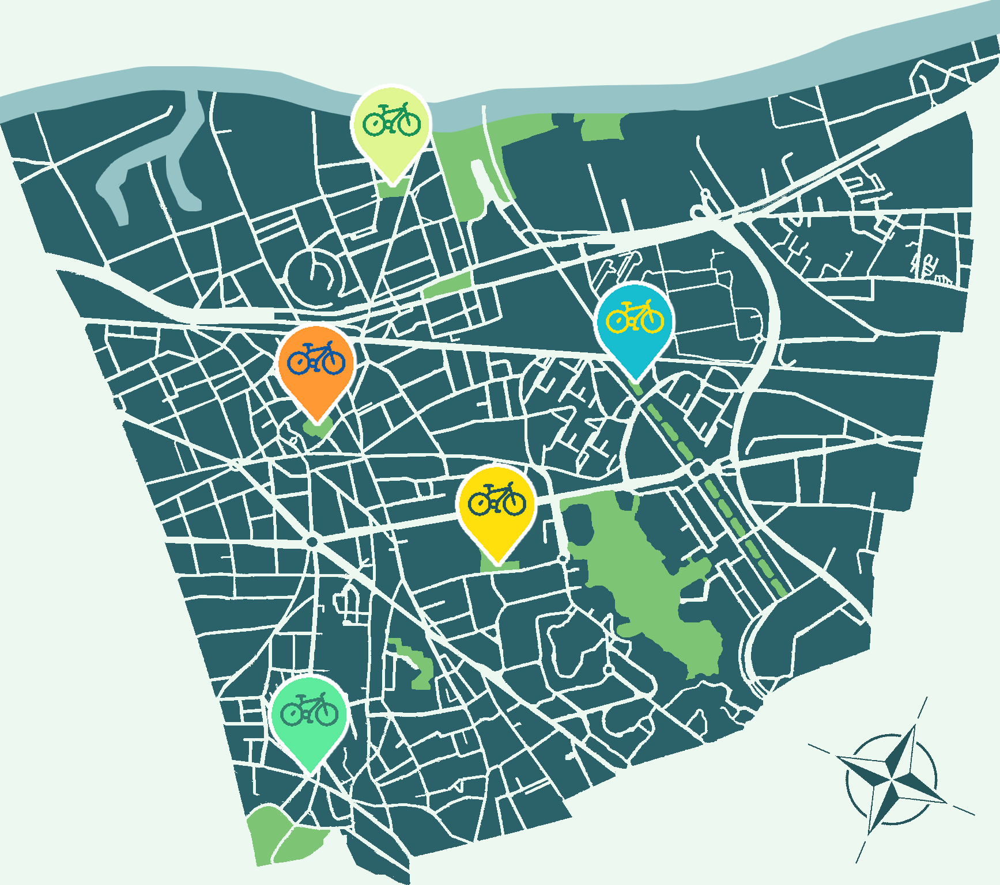
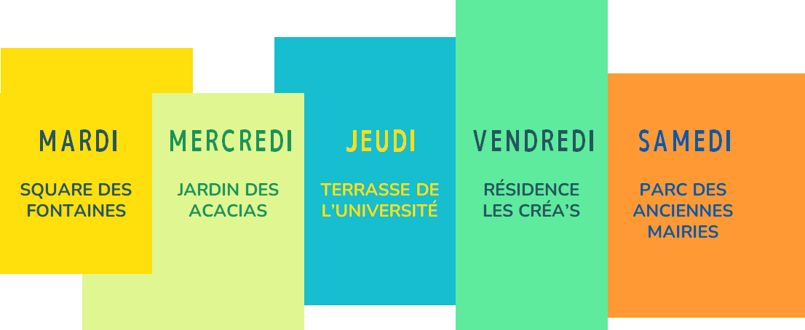
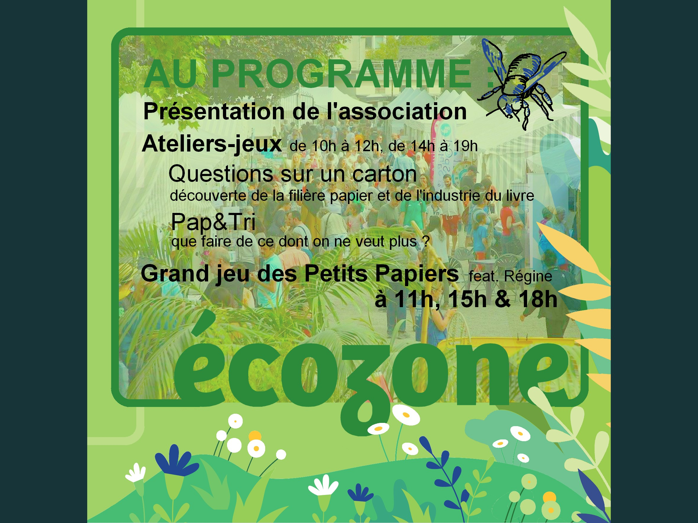
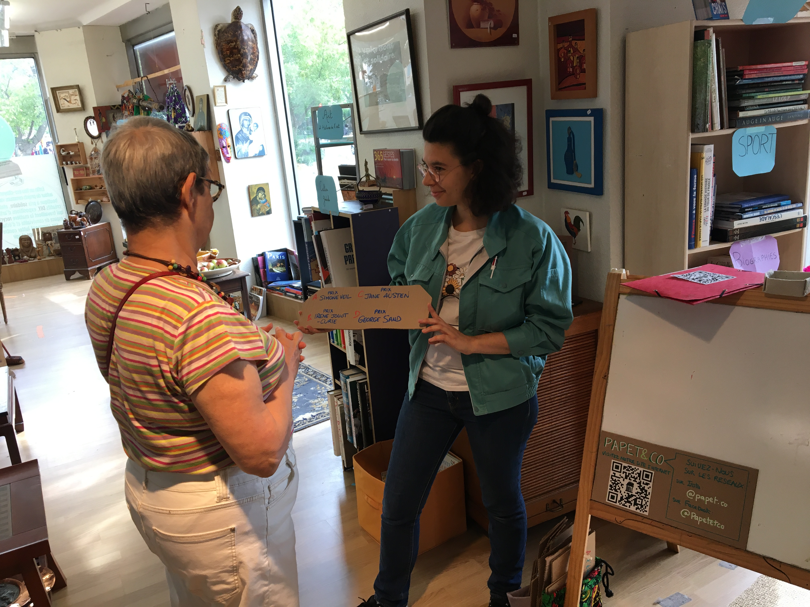
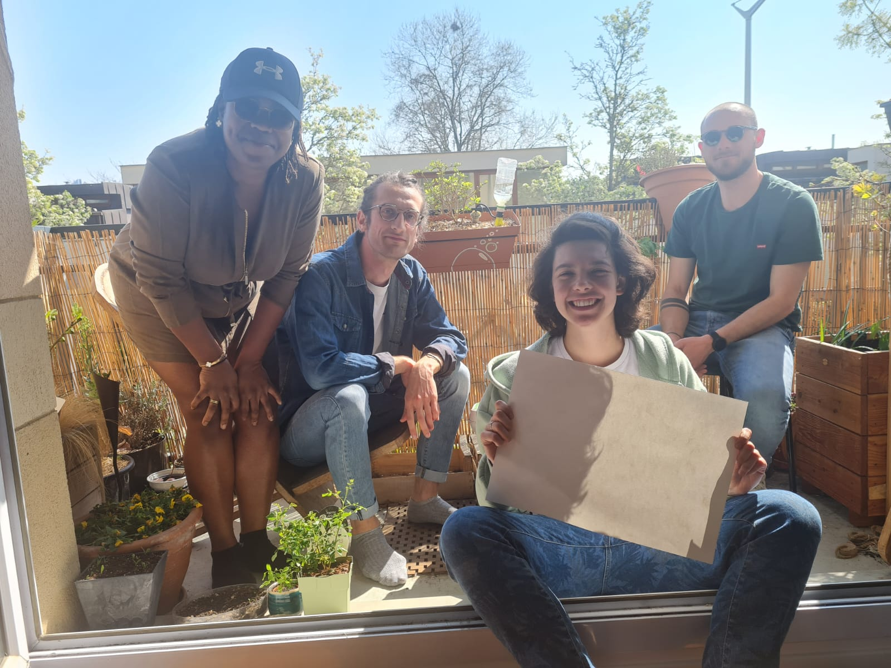

Bonjour à tou·te·s, bienvenue aux nouvelles et aux nouveaux !
Bienvenue sur la newsletter de PAPET&CO !
Notre association loi 1901, domiciliée à Nanterre, a été créée cette année autour de la problématique :
Comment limiter l'impact environnemental du cycle du papier et du livre ?
Par la création d'une cellule d’observation de ces filières et par le partage de bonnes pratiques,
notamment en encourageant les actions allant dans ce sens (boîtes à livre, ateliers de réemploi etc.), nous visons à
faciliter la prévention, le réemploi et le recyclage des matières fibreuses.
Vous pouvez retrouver nos 3 missions,
Documenter,
Partager et
Innover ainsi que leurs avancées sur notre site et,
si vous voulez rejoindre l'association ou nous soutenir, vous pouvez aussi adhérer :
Découvrir PAPET&CO
Soutenir PAPET&CO
Donner et échanger des livres, sensibiliser à leur réemploi et à l'impact d'un tel geste...
Au guidon d'un vélo cargo rempli de livres, véritable boîte à livres mobile, l'association PAPET&CO tiendra des permanences régulières
dans les différents quartiers de la ville de Nanterre.

En savoir plus

Du 5 juillet au 6 août et du 23 août au 14 septembre,
du mardi au samedi, retrouvez-nous dans les parcs et les rues de Nanterre !
Nous serons aussi aux
Terrasses d'été les 7 et 9 juillet, et les 26 et 30 août. Merci à tous les partenaires qui ont permis la réalisation de ce premier projet :
Nanterre en Transition, le centre social et culturel La Traverse, la Ressourcerie Le Cercle, Circul'Livre, la Rustine de Nanterre et la Mairie de Nanterre, en particulier
l'organisation des Terrasses d'Été et le réseau des médiathèques !

Festival ÉcoZone
14 mai 2022
PAPET&CO est super contente d’avoir participé au festival EcoZone au parc des anciennes mairies de Nanterre,
on vous propose un petit retour en images et en souvenirs !
Merci à tou·te·s pour les belles rencontres et les échanges !

Ressourcerie Le Cercle
26 juin 2022
Nous étions à l'ouverture mensuelle de la Ressourcerie du Cercle à Nanterre ce dimanche, merci à celles et ceux qui ont participé au
Quiz et gagné un livre pour l'occasion !
Merci à la Ressourcerie Le Cercle de nous avoir chaleureusement accueillis,
nous revenons très vite pour nos prochaines aventures !

Newsletter #1
Mai 2022
Vous ne l'aviez reçue que par mail, vous pouvez à présent retrouver la précédente newsletter de mai 2022 sur le site, en suivant ce lien !
Si vous êtes dans cette liste de diffusion, c'est que vous avez probablement croisé un·e de nos membres
et que vous avez accepté de recevoir de nos nouvelles. Vous pouvez revenir sur votre décision en nous envoyant un mail,
ou au contraire nous proposer d'ajouter quelqu'un (avec son consentement) !